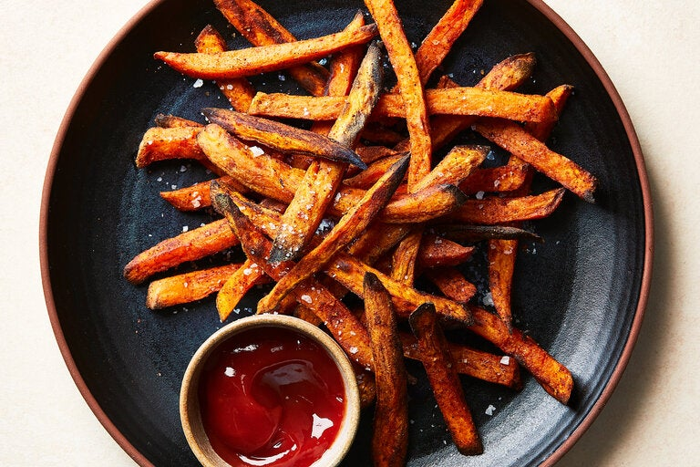

Sweet Potato Fries

Like air-fryer French fries, air-fryer sweet potatoes achieve similar success, utilizing less oil and
requiring less time than deep-fried versions.While sweet potato fries won’t crisp up as much as their
potato counterparts, that’s part of the appeal, offering textural contrast of creamy centers and charred
tips. Oomph from any of your favorite spices would work well here, along with the paprika. Sumac could add
a punch of brightness or a dash of cayenne can impart some heat. If your air fryer basket is larger, try
a bigger sweet potato for a higher serving — but don’t overfill it with sweet potatoes, or they’ll steam
rather than crisping in spots.
Ingredients(1-2 servings)
- 1small sweet potato (about 8 ounces), peeled
- 2tablespoons extra-virgin olive oil
- 2teaspoons ground paprika
- Salt
- Ketchup or mustard (optional), for serving
Steps
- Heat air fryer to 400 degrees, if preheating is recommended for your air fryer.
- Cut the sweet potato in half lengthwise then set each half on its flat surface and slice into ¼-inch planks. Cut the planks lengthwise into
¼-inch thick strips. In a large bowl, toss the sweet potato fries with the olive oil and paprika until well-coated; season generously with salt.
- Transfer the sweet potatoes to the air fryer, piling them haphazardly to create height. (This will help with airflow, which helps the sweet potatoes
cook evenly and crisp in spots. If you stack them too tightly, they will steam and soften.)
- Cook for 5 minutes. Use tongs to give them a quick toss, then continue cooking until the sweet potato fries are tender on the inside and crisped
and darkened in some spots toward the tips, 10 to 12 minutes, tossing again halfway through.
- Transfer sweet potatoes to a serving dish and season with more salt if desired. Serve with ketchup or mustard.